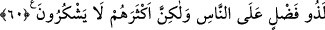

Yine Hâfız şöyle der:
Yakut ve cevher tâlibi yoktur, aksi halde güneş
Evvelden beri maden işindedir
Mesnevî’de de şöyle denilmiştir:
İster yavaş gitsin, ister acele koşsun
Sonunda arayan elbette aradığını bulur
el-Hikemü’l-Ataiyye ve şerhinde şöyle denilir: “Allah’ın kendisini hayır işlemekten
alıkoyan şehvetlerinden kurtarmasını ve her hâlinde kendisini kuşatmış bulunan gafletten
çıkarmasını garip bulanlar, ilâhî kudretin âciz olduğunu düşünüyorlar demektir. Böyle
düşünen kimse de inkara düşmüş ya da düşmesine ramak kalmış demektir. Bunun delili:
“Allah her şeye muktedirdir.” (el-Kehf, 18/45) âyetidir. Allah Teâlâ burada kudretinin
her şeye yetebileceğini, her şeyi kuşattığını açıkça belirtmektedir. Allah’ın kişiyi şehvet
ve gafletin elinden kurtarması ise en basit şeylerdendir. Eğer bu konuda ümidinin
güçlenmesi için yardım istersen, hali benim gibi olup da başlangıçta günahkar iken
Allah’ın kurtardığı ve özel olarak inayet ettiği İbrahim b. Edhem, Fudayl b. Iyaz,
Abdullah b. Mübarek, Zünnûn Mısrî, Malik b. Dinar ve diğerlerine bak.
60. Allah’a yalan uyduranların kıyamet günü hakkındaki zanları nedir? Allah
insanlara karşı çok lütuf sahibidir, ama çokları şükretmiyorlar.
“Allah’a yalan uyduranların kıyamet günü hakkındaki zanları nedir?” Yani tüm fiil
ve sözlerin ortaya döküldüğü, bunlara en küçük parçasına varıncaya kadar karşılık
verildiği, o gün hakkındaki zanları nedir? demektir. Maksad kıyamet gününde
kendilerine yapılacak muamelenin dehşetiyle kıyamet gününün dehşetini ve
korkunçluğunu ortaya sermektir.
İftirâ zaten yalandan başka bir şey olmadığı halde yalanın da fazladan zikredilmesi, bu
iftiracıların yaptıklarının son derece kötü olduğu ve bunun kendi inançlarına göre bile
yalan olduğunu göstermek maksadıyladır.
“Allah” bütün “insanlara karşı çok” büyük bir “lütuf sahibidir,” Çünkü insanlara
hakla bâtılı, güzelle çirkini ayırt edebilecek bir akıl ihsan etmiş; onlara kitaplar indirip
peygamberler göndererek merhamet etmiştir “ama çokları” bu büyük nimete
“şükretmiyorlar.” Bütün güç ve anlayışlarını yaratıldıkları gayeye sarf etmiyorlar, akıl